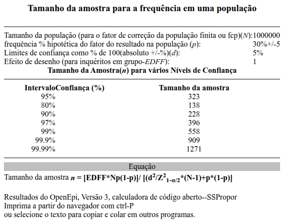
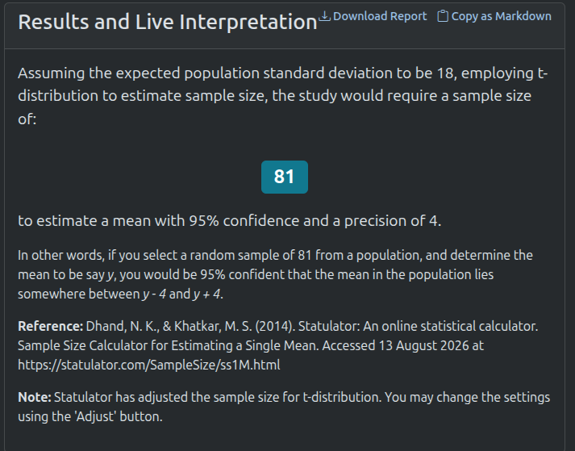
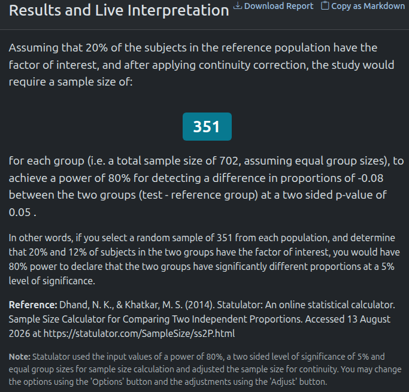
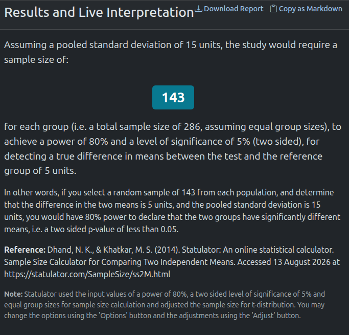
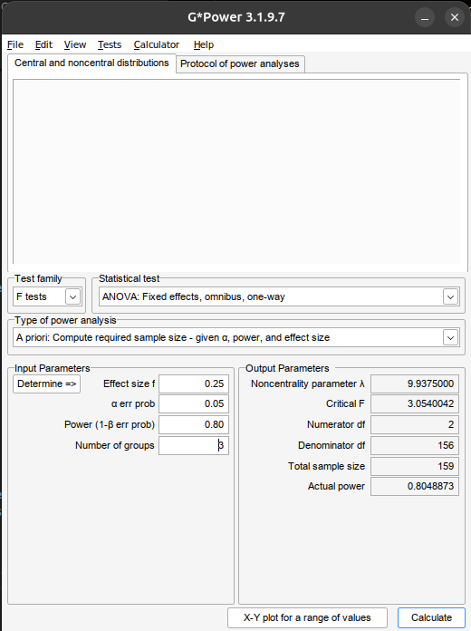

Da Pergunta Científica ao Tamanho Amostral
Fundamentos de inferência, delineamento, amostragem e planejamento estatístico
Prof. Dr. Sadraque E. F. Lucena
http://sadraquelucena.github.io/FARMA0048
FARMA0048 – Bioestatística
Programa de Pós-Graduação em Ciências Farmacêuticas (PPGCF)
Conceitos Fundamentais
Conceitos Fundamentais
- Estatística é a ciência utilizada para fazer inferências sobre fenômenos aleatórios específicos com base em informações relativamente limitadas provenientes de uma amostra.
- A Estatística possui duas áreas principais:
- Estatística Matemática: desenvolvimento de novos métodos de inferência estatística.
- Estatística Aplicada: aplicação dos métodos da Estatística Matemática a áreas específicas do conhecimento (Economia, Psicologia, Saúde Pública etc.).
- Bioestatística é o ramo da Estatística Aplicada que aplica métodos estatísticos a problemas médicos e biológicos.
População vs. Amostra
- População corresponde ao conjunto de todas as unidades de interesse para uma pesquisa.
- Em Bioestatística, essas unidades podem ser pacientes, medicamentos, hospitais, unidades de saúde etc.
- Quando a população é definida como o universo para o qual se pretende generalizar os resultados, é denominada população-alvo.
- A parcela da população-alvo que pode ser efetivamente alcançada nas condições geográficas, institucionais e temporais do estudo é denominada população acessível.
População vs. Amostra
- Amostra corresponde ao subconjunto de unidades selecionado da população para participar do estudo.
- O conjunto de unidades que o protocolo estabelece que deverá ser selecionado para o estudo é chamado de amostra pretendida.
- As unidades que foram efetivamente incluídas no estudo são denominadas de participantes efetivos (actual subjects).
- A diferença entre a amostra pretendida e os participantes efetivos pode resultar de recusas, inelegibilidade, impossibilidade de contato e outras perdas durante o recrutamento.
Censo vs. Amostragem
- Censo é a coleta de dados de todas as unidades da população de interesse.
- Amostragem é o processo de selecionar um subconjunto de unidades da população para obter dados e realizar inferências sobre a população.
- No censo, não há variabilidade decorrente da seleção de uma amostra; na amostragem, os resultados estão sujeitos à variabilidade amostral.
- A escolha entre censo e amostragem depende da dimensão da população, custos, tempo, acessibilidade e objetivos do estudo.
Exemplo
- Censo: avaliar o teor de princípio ativo em todos os lotes produzidos por uma indústria durante determinado período.
- Amostragem: avaliar uma parcela dos lotes para estimar o teor de princípio ativo da produção.
Parâmetro e Estimativa
- Parâmetro é uma quantidade que descreve uma característica da população.
- Em geral, não conhecemos toda a população, então o parâmetro é desconhecido.
- Os parâmetros são representados por valores como:
- Média populacional (\(\mu\))
- Prevalência/proporção populacional (\(p\))
- Desvio-padrão populacional (\(\sigma\))
- Exemplo: Qual é a prevalência (proporção) de idosos em polifarmácia que apresentam pelo menos um medicamento potencialmente inapropriado?
- Parâmetro: proporção verdadeira \(p\) de idosos da população-alvo com pelo menos um medicamento potencialmente inapropriado.
Parâmetro e Estimativa
- Estimativa é um número calculado a partir dos dados observados de uma amostra e utilizado para estimar um parâmetro populacional.
- Exemplos:
- Média amostral (\(\overline{x}\))
- Prevalência/proporção amostral (\(\widehat{p}\))
- Desvio-padrão amostral (\(s\))
- Exemplos:
- Exemplo: Em uma amostra de 400 idosos em polifarmácia, 140 apresentam pelo menos um medicamento potencialmente inapropriado.
- Estimativa: \(\widehat{p} = \frac{140}{400} = 0{,}35\)
- Interpretação: 35% da amostra apresentou pelo menos um medicamento potencialmente inapropriado.
Variabildiade amostral
- Variabilidade amostral é a variação dos valores de uma estimativa entre diferentes amostras extraídas da mesma população.
- Mesmo quando todas as amostras são selecionadas pelo mesmo procedimento, elas podem conter indivíduos diferentes e, consequentemente, produzir estimativas diferentes.
- Portanto, uma estimativa amostral não é necessariamente igual ao parâmetro populacional.
- Essa variação é esperada e é a base da inferência estatística.
Unidade de análise
- Unidade de análise é a unidade sobre a qual são realizadas as análises estatísticas e para a qual os resultados são interpretados.
- As variáveis são observadas ou medidas para cada unidade de análise.
- A unidade de análise deve ser compatível com a pergunta, o objetivo e o delineamento da pesquisa.
- Exemplos:
- Paciente
- Unidade de saúde
- Medicamento
Variáveis
- Variável é uma característica de uma unidade de estudo que pode assumir diferentes valores entre as unidades ou observações.
- Uma variável representa uma característica que será observada, medida ou classificada no estudo.
Exemplo
| Unidade | Idade | Anticoagulante | Sangramento grave |
|---|---|---|---|
| Paciente 1 | 67 | Varfarina | Não |
| Paciente 2 | 74 | Apixabana | Sim |
| Paciente 3 | 61 | Rivaroxabana | Não |
Paciente é a unidade de estudo; idade, anticoagulante e sangramento grave são variáveis.
Tipos de Variáveis
As variáveis podem ser classificadas de acordo com a natureza dos valores que assumem.
Variáveis qualitativas: seus valores representam categorias ou grupos.
- Exemplos:
- Sexo
- Anticoagulante utilizado
- Presença de reação adversa
- Gravidade da reação adversa
- Variáveis quantitativas: seus valores representam quantidades mensuráveis, para as quais operações aritméticas têm significado.
- Exemplos:
- Idade
- Pressão sistólica
- Concentração plasmática
- Número de medicamentos
Variáveis Qualitativas (categóricas)
- Nominal: as categorias não possuem ordem natural. \(\phantom{aaaaaaaaaaaaaaaaaaaaa}\)
- Exemplos:
- Sexo (Feminino, masculino, etc.)
- Tipo sanguíneo (A, B, O, AB)
- Classe terapêutica (anticoagulante, antidiabético, etc.)
- Ordinal: as categorias apresentam uma ordem natural. \(\phantom{aaaaaaaaaaaaaaaaaaa}\)
- Exemplos:
- Intensidade da reação adversa (leve, moderada, grave)
- Grau de satisfação: (baixo, moderado, alto)
- Estágio clínico (I, II, III e IV))
Variáveis Quantitativas (numéricas)
- Discreta: assume valores provenientes de uma contagem, geralmente inteiros.
- Exemplos:
- número de medicamentos
- número de hospitalizações
- número de eventos adversos
- Contínua: pode assumir qualquer valor em um intervalo, dentro da precisão de mensuração.
- Exemplos:
- peso
- creatinina
- dose
Por que classificar as variáveis?
- A natureza da variável orienta a análise estatística.
- Isto é, influencia a forma de descrevê-la, visualizá-la, compará-la e modelá-la.
| Tipo de variável | Exemplos de resumo | Exemplos de métodos |
|---|---|---|
| Qualitativa Nominal | frequência, proporção | qui-quadrado, regressão logística |
| Qualitativa Ordinal | frequência, proporção, mediana | métodos para dados ordinais |
| Quantitativa Discreta | média, mediana, frequência | modelos de contagem |
| Quantitativa Contínua | média, DP, mediana, amplitude | t de Student, ANOVA, regressão linear |
Exposição e Desfecho
Em pesquisas que investigam relações entre características, condições ou intervenções e resultados, é necessário distinguir o papel desempenhado pelas variáveis.
- Exposição é a variável que representa a característica, condição ou intervenção de interesse cuja relação com o desfecho se pretende investigar.
- Desfecho é a variável que representa a característica ou evento que se pretende explicar, comparar ou avaliar em função da exposição.
- Exemplo: O uso de um novo anticoagulante está associado a menor ocorrência de sangramento grave?
- Exposição: tipo de anticoagulante utilizado
- Desfecho: ocorrência de sangramento grave
Covariável
Além da exposição e do desfecho, um estudo pode incluir outras variáveis relevantes para a análise (covariáveis).
- Covariável é uma variável adicional considerada na análise em relação à exposição e ao desfecho.
- Exemplo: O uso de um novo anticoagulante está associado a menor ocorrência de sangramento grave?
- Exposição: tipo de anticoagulante utilizado
- Desfecho: ocorrência de sangramento grave
- Covariáveis: idade, função renal, uso de antiagregantes
Exemplo
Um grupo de pesquisadores deseja estimar a frequência de medicamentos potencialmente inapropriados (MPI) entre idosos em polifarmácia atendidos em unidades de saúde de Aracaju. Foram avaliados 400 idosos, dos quais 140 apresentavam pelo menos um MPI Além da presença de MPI, foram coletados:
- Idade
- Sexo
- Número de medicamentos em uso
- Presença de diabetes
- Função renal
- Uso de benzodiazepínicos
Identifique
- População-alvo
- Amostra
- Unidade de análise
- Parâmetro de interesse
- Estimativa do parâmetro
- Tipos de variáveis
- Desfecho
- Exposição
- Covariáveis
Exemplo
Pesquisadores acompanharam 1.200 pacientes com fibrilação atrial que iniciaram tratamento anticoagulante. No início do estudo, 600 pacientes utilizavam apixabana e 600 utilizavam varfarina. Após 12 meses de acompanhamento:, 36 pacientes em uso de apixabana apresentaram sangramento grave e 60 pacientes em uso de varfarina apresentaram sangramento grave. Também foram coletadas:
- Idade
- Sexo
- Função renal
- Uso de antiagregantes
- Histórico de sangramento
Identifique
- População-alvo
- Amostra
- Unidade de análise
- Parâmetro de interesse
- Estimativa do parâmetro
- Tipos de variáveis
- Desfecho
- Exposição
- Covariáveis
As variáveis devem atender ao objetivo da pesquisa
As variáveis devem ser definidas de acordo com a pergunta e os objetivos da pesquisa.
Se um estudo não coletar as variáveis necessárias para responder à pergunta científica, os dados coletados não permitirão respondê-la.
Ao definir cada objetivo, determine as variáveis necessárias para atendê-lo, incluindo aquelas que permitam medir a exposição, o desfecho e outros fatores relevantes.
A análise estatística não consegue recuperar uma informação que não foi coletada!
Delineamento e Estrutura dos Dados
Delineamento do estudo
- O delineamento da pesquisa define como exposição e desfecho serão observados ou atribuídos e como os dados serão obtidos ao longo do estudo.
- Isto influencia quais comparações podem ser realizadas, quais medidas podem ser estimadas e quais métodos estatísticos são apropriados.
- A escolha deve ser compatível com a pergunta científica.
- Exemplo: O uso de um novo anticoagulante reduz o risco de sangramento grave?
- Observacional: compara usuários dos diferentes anticoagulantes.
- Experimental: o tratamento é atribuído pelo pesquisador.
Estudo observacional vs. experimental
- Estudo observacional: o(a) pesquisador(a) observa as exposições existentes, sem determinar a exposição por meio do protocolo.
- Inferência: identificar associação, com possibilidade de confundimento.
- Estudo experimental: o(a) pesquisador(a) determina a intervenção ou exposição segundo o protocolo do estudo.
- Inferência: randomização pode permitir melhor identificação do efeito causal da intervenção.
- Exemplo: Um novo serviço farmacêutico reduz hospitalizações?
- Observacional: compara pacientes que receberam ou não o serviço conforme a prática usual.
- Experimental: atribui os participantes ao serviço farmacêutico ou ao cuidado usual.
Estudo observacional vs. experimental
Observacional
- Transversal
- Caso-controle
- Coorte
Experimental
- Ensaio clínico randomizado
- Quase-experimental
Estudo transversal
- Estudo transversal é aquele em que exposição e desfecho são avaliados em um determinado momento ou período de observação.
- É particularmente adequado para estimar a frequência de características ou condições em uma população.
- A temporalidade limitada dificulta estabelecer se a exposição precedeu o desfecho.
- Exemplo: Estimar a prevalência de medicamentos potencialmente inapropriados entre idosos em polifarmácia.
- População: idosos em polifarmácia
- Exposição: características da farmacoterapia
- Desfecho: presença de medicamento potencialmente inapropriado
- Medida de interesse: prevalência
Estudo caso-controle
- Estudo caso-controle seleciona participantes segundo a ocorrência do desfecho e investiga exposições anteriores.
- Os participantes são classificados como casos e controles.
- A seleção adequada dos controles é fundamental para a validade da estimativa.
- A medida clássica de associação é Odds Ratio (OR).
- Exemplo: Investigar fatores associados a reações adversas graves a anticoagulantes.
- Casos: pacientes com reação adversa grave
- Controles: pacientes sem reação adversa grave
- Exposição investigada: tipo de anticoagulante, dose, função renal etc.
Estudo de coorte
- Estudo de coorte acompanha indivíduos classificados segundo a exposição e observa a ocorrência do desfecho ao longo do tempo.
- Permite estabelecer a temporalidade entre exposição e desfecho.
- Permite estimar, entre outras medidas:
- Incidência;
- Risco;
- Razão de riscos (risk ratio);
- Diferença de riscos;
- Hazard ratio, quando o tempo até o evento é analisado.
- Exemplo: Comparar o risco de sangramento grave entre usuários de apixabana e varfarina.
Ensaio clínico randomizado
- Ensaio clínico randomizado é um estudo experimental em que os participantes são aleatoriamente alocados às intervenções previstas no protocolo.
- A randomização busca tornar os grupos comparáveis quanto a fatores conhecidos e desconhecidos, em média.
- A análise concentra-se na comparação dos efeitos entre os grupos, considerando:
- Efeito estimado;
- Incerteza da estimativa;
- Análise por intenção de tratar;
- Perdas e adesão ao tratamento.
- Exemplo: Avaliar se um novo antidiabético reduz mais a HbA1c que o tratamento padrão.
Estudo quase-experimental
- Estudo quase-experimental avalia uma intervenção sem a alocação aleatória típica do ensaio clínico randomizado.
- É frequente na avaliação de serviços e intervenções farmacêuticas.
- Exemplo: Avaliar o efeito da implantação de um serviço de conciliação medicamentosa sobre erros de medicação.
Período antes da implantação | Implantação do serviço | Período após a implantação
- A ausência de randomização exige atenção a diferenças entre grupos, tendências temporais, confundimento e mudanças ocorridas simultaneamente à intervenção.
- Podem ser utilizados métodos como diferenças-em-diferenças e séries temporais interrompidas, dependendo do desenho.
Estruturas temporais e de desfecho
Estudo longitudinal
- Estudo longitudinal é aquele em que os participantes são observados em dois ou mais momentos ao longo do tempo.
- O acompanhamento temporal permite avaliar mudanças nos desfechos e a ocorrência de eventos ao longo do período de estudo.
- Quando as mesmas unidades são avaliadas repetidamente, as observações são correlacionadas e não devem ser tratadas como observações independentes.
- Exemplo: Avaliar a evolução da HbA1c durante 12 meses em pacientes que iniciaram um novo antidiabético.
- Exposição: tratamento
- Desfecho: HbA1c
- Momentos: basal, 3, 6 e 12 meses
- A análise deve considerar a dependência entre as observações do mesmo participante.
- Podem ser necessários métodos para medidas repetidas, como modelos mistos ou GEE.
Estruturas temporais e de desfecho
Tempo até o evento
- Em alguns estudos, o interesse não é apenas saber se o evento ocorreu, mas também quanto tempo transcorreu até sua ocorrência.
- Cada participante é acompanhado até ocorrência do evento ou término do acompanhamento sem ocorrência do evento.
- Quando o evento não é observado durante o período de acompanhamento, temos uma observação censurada.
- Exemplo: Comparar o tempo até a primeira hospitalização entre usuários de apixabana e varfarina.
- Exposição: anticoagulante utilizado
- Desfecho: primeira hospitalização
- Tempo: dias desde o início do acompanhamento até hospitalização ou censura
- A análise precisa considerar simultaneamente a ocorrência do evento, o tempo de acompanhamento e a censura.
- Métodos: Kaplan-Meier, teste de log-rank e modelo de Cox.
Diferentes dimenões do delineamento
| Dimensão | Exemplos |
|---|---|
| Tipo de estudo | observacional / experimental |
| Delineamento observacional | transversal / caso-controle / coorte |
| Intervenção | ensaio clínico / quase-experimental |
| Temporalidade | transversal / longitudinal |
| Estrutura do desfecho | binário / contínuo / tempo até evento |
| Observações | independentes / medidas repetidas |
Amostragem
Amostragem
- Amostragem é o processo de seleção de unidades de uma população para compor a amostra do estudo.
- O método de amostragem determina como as unidades podem ser selecionadas e influencia a capacidade de realizar inferências para a população.
- Importante: probabilística vs. não probabilística descreve o processo de seleção, não a qualidade intrínseca dos dados ou do estudo.
Amostragem probabilística vs. não probabilística
Amostragem probabilística
- Cada unidade elegível possui uma probabilidade conhecida e não nula de seleção.
- A seleção é realizada por um mecanismo probabilístico.
- Permite fundamentar a inferência estatística considerando formalmente o plano amostral.
- Principais técnicas:
- Amostragem aleatória simples
- Amostragem sistemática
- Amostragem estratificada
- Amostragem por conglomerados
Amostragem probabilística vs. não probabilística
Amostragem não probabilística
- A probabilidade de seleção das unidades não é conhecida ou não é determinada por um mecanismo probabilístico.
- A seleção depende de disponibilidade, acessibilidade ou critérios definidos pelo pesquisador.
- Pode limitar a capacidade de generalizar os resultados para a população-alvo.
- Principais técnicas:
- Amostragem por coveniência
- Amostragem consecutiva
- Amostragem intencional
- Amostragem bola de neve
Amostragem aleatória simples
- Amostragem aleatória simples é aquela em que cada unidade da população possui igual probabilidade de ser selecionada e cada amostra possível de determinado tamanho possui a mesma probabilidade de seleção.
- Exemplo: Selecionar aleatoriamente 300 pacientes a partir do cadastro de todos os pacientes elegíveis de uma rede de unidades de saúde.
- Cada paciente elegível possui a mesma probabilidade de ser selecionado.
Implicações estatísticas
- É a forma mais simples de amostragem probabilística.
- Fornece uma base direta para a inferência sobre a população, desde que a população acessível esteja adequadamente definida.
- Os métodos usuais de erro-padrão e intervalo de confiança podem ser aplicados sob o plano amostral correspondente.
Amostragem sistemática
- Amostragem sistemática seleciona unidades em intervalos regulares a partir de uma lista ordenada da população, após a escolha aleatória do ponto inicial.
- Exemplo: Selecionar 1 a cada 10 prescrições de uma lista de prescrições elegíveis.
Implicações estatísticas
- Pode ser mais simples operacionalmente que a amostragem aleatória simples.
- Requer uma lista adequada da população.
- A ordenação da lista deve ser avaliada, pois padrões periódicos relacionados às características de interesse podem comprometer a seleção.
- Atenção: “selecionar cada décima pessoa” não é suficiente para caracterizar uma amostragem sistemática probabilística; é necessário um ponto inicial aleatório e um mecanismo de seleção definido.
Amostragem estratificada
- Amostragem estratificada divide a população em estratos definidos por características relevantes e realiza a seleção dentro de cada estrato.
- Os estratos devem ser definidos antes da seleção da amostra.
- Exemplo: Selecionar pacientes separadamente segundo faixas etárias (18-39 anos, 40-59 anos, ≥ 60 anos).
Implicações estatísticas
- Pode garantir a presença de subgrupos relevantes na amostra.
- Pode aumentar a precisão das estimativas quando os estratos são internamente mais homogêneos.
- A análise deve considerar o plano de estratificação, especialmente quando as frações amostrais diferem entre os estratos.
Amostragem por conglomerados
- Amostragem por conglomerados seleciona grupos de unidades (conglomerados) em vez de selecionar diretamente todas as unidades individuais da população.
- As unidades dentro dos conglomerados são então investigadas segundo o plano amostral.
- Conglomerados comuns: UBS, hospitais, farmácias e municípios.
- Exemplo: Selecionar aleatoriamente 20 unidades básicas de saúde e incluir os pacientes elegíveis dessas unidades.
Implicações estatísticas
- Pacientes da mesma unidade de saúde podem apresentar características mais semelhantes entre si do que pacientes de unidades diferentes.
- A análise que ignora essa estrutura pode subestimar a variabilidade das estimativas.
- Em estudos complexos, podem ser necessários métodos que considerem o efeito do desenho amostral.
Amostragem por conveniência
- Amostragem por conveniência seleciona unidades que estão facilmente disponíveis ao pesquisador.
- Exemplo: Recrutar pacientes que comparecerem à farmácia-escola durante o período da pesquisa.
Implicações estatísticas
- É simples e barata, mas o mecanismo de seleção pode produzir uma amostra sistematicamente diferente da população-alvo.
- A aplicação direta dos métodos de inferência pode não representar adequadamente a incerteza decorrente do processo de seleção.
- A generalização para a população-alvo deve ser feita com cautela.
- Ter uma amostra grande não elimina o problema de seleção.
Amostragem consecutiva
- Amostragem consecutiva inclui, durante determinado período, todas as unidades elegíveis que atendem aos critérios de seleção, até atingir o tamanho amostral planejado ou o término do período definido.
- Exemplo: Incluir todos os pacientes elegíveis atendidos em uma clínica farmacêutica entre janeiro e dezembro, até atingir 300 participantes.
Implicações estatísticas
- É frequente em pesquisas clínicas e hospitalares.
- Pode reduzir a seleção arbitrária de participantes em comparação com uma amostra de conveniência baseada apenas na disponibilidade.
- Não é necessariamente probabilística: se todos os elegíveis de um serviço são incluídos, o problema passa a ser principalmente qual população esse serviço representa.
- “Consecutiva” não significa “aleatória”.
Amostragem intencional
- Amostragem intencional seleciona deliberadamente unidades consideradas relevantes para os objetivos do estudo, segundo critérios estabelecidos pelo pesquisador.
- Exemplo: Selecionar farmacêuticos com experiência em farmacovigilância para investigar barreiras à notificação de reações adversas.
Implicações estatísticas
- É útil quando o objetivo exige participantes com características específicas.
- A probabilidade de seleção não é conhecida.
- A inferência estatística para uma população mais ampla fica limitada pelo processo de seleção.
- É mais comum em pesquisas exploratórias e qualitativas, mas também pode aparecer em pesquisas quantitativas com populações específicas.
Amostragem em bola de neve
- Amostragem em bola de neve inicia-se com participantes elegíveis que indicam ou recrutam outros indivíduos que atendem aos critérios do estudo.
- Exemplo: Recrutar participantes de uma população de difícil acesso por meio da indicação de novos participantes pelos indivíduos inicialmente recrutados.
Implicações estatísticas
- Pode permitir acesso a populações para as quais não existe uma lista adequada de unidades elegíveis.
- A seleção pode produzir participantes com características semelhantes às dos indivíduos que os indicaram.
- A probabilidade de seleção não é conhecida, limitando a inferência para a população-alvo.
- A rede de recrutamento passa a fazer parte do processo de seleção.
Representatividade
- Representatividade refere-se ao grau em que as unidades selecionadas para a amostra refletem, nas características relevantes para a pesquisa, a população sobre a qual se pretende fazer inferências.
- A representatividade depende da população definida, do processo de seleção e das características relevantes para a pergunta científica.
- Uma amostra pode representar adequadamente uma população para uma determinada finalidade, mas não necessariamente para outra.
- Exemplo: estimar a prevalência de polifarmácia entre idosos de uma cidade.
- Uma amostra composta apenas por idosos atendidos em um hospital de referência pode diferir da população de idosos da cidade quanto a gravidade das doenças, número de medicamentos e comorbidades.
- A amostra precisa ser adequada à população e à pergunta para a qual se pretende generalizar os resultados.
Amostragem probabilística e representatividade
- A amostragem probabilística não garante que uma amostra específica reproduza perfeitamente a população.
- Ela fornece um mecanismo conhecido de seleção, permitindo quantificar a variabilidade decorrente da amostragem sob o plano amostral.
- Uma amostra não probabilística pode apresentar características semelhantes às da população e, ainda assim, não oferecer a mesma base para a inferência estatística.
- Representatividade não é sinônimo de semelhança descritiva entre amostra e população.
Viés
- Viés é um erro sistemático que produz uma diferença entre a estimativa obtida e o valor que seria esperado sob o procedimento de estudo ideal.
- Diferentemente da variabilidade amostral, o viés não é eliminado simplesmente aumentando o tamanho da amostra.
- Exemplo: estimar a prevalência de diabetes na população adulta.
- Se o estudo recruta participantes exclusivamente em um serviço especializado em diabetes, a frequência observada pode ser sistematicamente maior que a frequência na população-alvo.
- Uma amostra grande pode produzir uma estimativa muito precisa do valor errado.
Viés de seleção
- Viés de seleção ocorre quando o processo de seleção ou permanência dos participantes no estudo produz diferenças sistemáticas entre os participantes estudados e a população relevante para a inferência.
- Exemplo: avaliar a satisfação dos pacientes com um serviço farmacêutico.
- O pesquisador disponibiliza um questionário voluntário exclusivamente para pacientes que retornam ao serviço.
- Pacientes mais satisfeitos podem ter maior probabilidade de retornar e responder.
- Pacientes insatisfeitos podem estar menos propensos a participar.
- A satisfação observada pode não representar a satisfação da população de pacientes atendidos.
- Fontes possíveis de viés são a seleção dos participantes, não participação, perdas de seguimento e critérios de inclusão/exclusão inadequados.
Viés de não resposta
- Não resposta ocorre quando unidades selecionadas para o estudo não participam ou não fornecem determinadas informações.
- A não resposta pode produzir viés quando os indivíduos que não respondem diferem sistematicamente dos participantes em características relacionadas à pesquisa.
- Exemplo: 1.000 pacientes são selecionados para responder a um questionário sobre adesão medicamentosa, mas apenas 500 respondem.
- A questão estatística não é apenas “Quantos não responderam?”, mas
- “Os que não responderam diferem dos que responderam de maneira relevante para o estudo?”
Viés
- A inferência pode ser comprometida por:
- variabilidade amostral → estimativas variam entre amostras;
- viés de seleção → seleção sistematicamente distorcida;
- não resposta → participantes podem diferir dos não participantes;
- população acessível inadequada → população estudada pode não corresponder à população-alvo.
- Aumentar o tamanho da amostra reduz a variabilidade amostral, mas não corrige um processo de seleção enviesado.
Cálculo do tamanho amostral
Por que calcular o tamanho amostral?
- O tamanho amostral deve ser definido antes da coleta de dados, a partir do objetivo principal do estudo.
- Uma amostra muito pequena pode produzir estimativas imprecisas ou baixo poder para detectar efeitos relevantes.
- Uma amostra excessivamente grande pode utilizar recursos desnecessariamente e expor mais participantes a procedimentos de pesquisa sem benefício científico proporcional.
Elementos do cálculo
Tamanho amostral
- O tamanho amostral depende do objetivo estatístico do estudo e das características esperadas dos dados.
Informações necessárias para estudos de estimação
- Margem de erro
- Nível de confiança
- Variabilidade ou frequência esperada
- Tamanho da população, quando relevante
Informações necessárias para estudos de comparação
- Diferença ou efeito mínimo relevante
- Nível de significância
- Poder estatístico
- Variabilidade ou frequência esperada
- Proporção entre os grupos
- Perdas esperadas, quando aplicável
Margem de erro
- Margem de erro é o afastamento máximo desejado entre a estimativa amostral e o parâmetro populacional, dentro do nível de confiança especificado.
- Exemplo: Queremos estimar a prevalência de medicamentos potencialmente inapropriados entre idosos com margem de erro de \(\pm 5\) pontos percentuais.
- Se a estimativa for \[\widehat{p} = 30\%\] um intervalo com margem de erro de 5 pontos percentuais seria, aproximadamente: \[25\% \text{ a } 35\%\].
- Quanto menor a margem de erro, maior o tamanho de \(n\).
- Atenção: margem de erro é especialmente importante quando o objetivo é estimar um parâmetro.
Nível de confiança
- O nível de confiança determina o grau de confiança utilizado na construção do intervalo de confiança.
- Os valores mais utilizados são 90%, 95% e 99%.
- Quanto maior o nível de confiança, maior o tamanho de \(n\).
Variabilidade
- A variabilidade da característica estudada influencia diretamente o tamanho necessário da amostra.
- Quanto maior a variabilidade dos dados, maior tende a ser o número de participantes necessário para obter determinada precisão.
- Exemplos:
- Para desfechos quantitativos, o cálculo geralmente requer uma medida da variabilidade, como o desvio-padrão (\(\sigma\)).
- Para desfechos binários, o cálculo geralmente requer uma proporção esperada (\(p\)).
- Quanto maior a variabailidade, maior o tamanho de \(n\).
Diferença mínima relevante
- A diferença mínima relevante é a menor diferença entre grupos que o estudo deve ser capaz de detectar.
- Deve ser definida a partir da relevância científica e clínica, e não escolhida apenas para produzir um tamanho amostral conveniente.
- Exemplo: Um novo tratamento reduz a HbA1c em relação ao tratamento padrão.
- A pesquisadora decide que uma diferença de \[\Delta = 0{,}5\%\] seria clinicamente relevante.
- O estudo será dimensionado para detectar essa diferença.
- Quanto menor a diferança, maior o tamanho de \(n\).
Nível de significância
- O nível de significância \(\alpha\) é definido antes do estudo e estabelece o limite para rejeição da hipótese nula.
- Nível de significância é o coplementar do nível de confiança.
- Se a confiança é de 95%, a significância é 5%.
- Valores frequentemente utilizado são \(\alpha=0{,}05\) e \(\alpha=0{,}01\).
- Quanto menor o nível de significância (\(\alpha\)), maior o tamanho de \(n\).
- Atenção: Significância estatística não define relevância clínica.
Poder estatístico
- Poder estatístico é a probabilidade de detectar um efeito de determinada magnitude quando esse efeito realmente existe.
- \(Poder=1-\beta\)
- Valores frequentemente utilizados são 80% ou 90%.
- Quanto maior o poder, maior o tamanho de \(n\).
Ajuste para perdas e não resposta
- Após determinar o tamanho amostral mínimo necessário, pode ser necessário aumentar o número de unidades a serem selecionadas ou recrutadas para considerar não resposta, perdas de seguimento ou dados não avaliáveis.
- O cálculo é \[n_{\text{final}}=\frac{n_{\text{inicial}}}{1-\text{perda}}\]
- Se \(n=300\) e esperamos 10% de perdas: \[n_{\text{final}}=\frac{300}{1-0{,}10}=334\]
- Perdas devem ser consideradas no planejamento, não depois que o estudo terminou.
Problema 1 – Estimar uma prevalência
- Uma equipe pretende realizar um estudo para estimar a prevalência de medicamentos potencialmente inapropriados entre idosos em polifarmácia.
- Informações que entram no cálculo e foram previamente definidas pelos pesquisadores:
- nível de confiança de 95%;
- margem de erro de \(\pm 5\) pontos percentuais;
- prevalência observada em estudos anteriores de 30%;
- expectativa de não resposta ou dados não avaliáveis: 15%.
Problema 1 – Estimar uma prevalência
Como calcular?
- Para estimar uma prevalência, precisamos identificar:
- Parâmetro: proporção de medicamentos inapropriados (\(p\));
- Prevalência/proporção em estudos anterioes: 30%;
- Margem de erro: 5 p.p.;
- Nível de confiança: 95%.
- Perdas: 15%
Problema 1 – Estimar uma prevalência
Como calcular
- Acesse https://www.openepi.com/
- No menu à esquerda, clique em Tamanho da amostra > Proporção
- Selecione a aba Entrar dados
- Em Frequência (p) antecipada % informe a prevalência de estudos anteriores ou da amostra piloto (No exemplo: 30)
- Em Limites de confiança como +/- porcentagem de 100 informe a margem de erro (No exemplo: 5)
- Clique em Calcular
Problema 1 – Estimar uma prevalência

Problema 1 – Estimar uma prevalência
- Para o nosso exemplo, o tamanho mínimo de amostra é \(n=323\).
- Considerando 15% de perdas, o \(n\) final é \[n_{\text{final}}=\frac{323}{1-0{,}15}=380\]
- Devemos selecionar/recrutar 380 indivíduos para obter aproximadamente 323 participantes avaliáveis.
Problema 2 – Estimar uma média
- Uma equipe de pesquisa pretende estimar a concentração plasmática média de um novo antibiótico em pacientes adultos tratados na dose terapêutica recomendada.
- Uma amostra piloto de 30 apcientes iindicou desvio-padrão de aproximadamente 18 mg/L.
- Os pesquisadores desejam estimar a concentração média com:
- 95% de confiança;
- margem de erro de ±4 mg/L;
- expectativa de não resposta ou dados não avaliáveis: 10%.
Problema 2 – Estimar uma média
Como calcular?
- Para estimar uma média, precisamos identificar:
- Parâmetro: concentração plasmática média \(\mu\);
- Desvio padrão: 18 mg/L;
- Margem de erro: 4 mg/L;
- Nível de confiança: 95%.
- Perdas: 10%
Problema 2 – Estimar uma média
Como calcular?
- Acesse https://www.statulator.com/
- No canto superior direto clique nas 3 barras horizontais
- Clique em Sample Size > Estimate Mean
- Em Level of Confidence selecione o nível de confiança (No exemplo: 0.95)
- Em Expected Standard Deviation insira o desvio-padrão da amostra piloto (No exemplo: 18)
- Em Precision or Margin of Error insira a margem de erro (No exemplo: 4)
- Clique em Calculate
Problema 2 – Estimar uma média

Problema 2 – Estimar uma média
- Para o nosso exemplo, o tamanho mínimo de amostra é \(n=81\).
- Considerando 10% de perdas, o \(n\) final é \[n_{\text{final}}=\frac{81}{1-0{,}10}=90\]
- Devem ser recrutados aproximadamente 90 pacientes, esperando-se obter pelo menos 81 medidas avaliáveis.
Exemplo Prático 1
Você pretende realizar um estudo transversal para estimar a prevalência de uso de medicamentos genéricos entre usuários de medicamentos na população brasileira.
Estudo de referência: BERTOLDI, A. D. et al. Utilização de medicamentos genéricos na população brasileira: uma avaliação da PNAUM 2014. Revista de Saúde Pública, v. 50, supl. 2, p. 11s, 2016. DOI: 10.1590/S1518-8787.2016050006120.
O estudo encontrou 45,5% de prevalência de uso de medicamentos genéricos (IC95%: 43,7%–47,3%).
Para o novo estudo, deseja-se:
Nível de confiança: 95%
Margem de erro: ±5 pontos percentuais
Determine o tamanho mínimo da amostra necessário para a pesquisa.
Exemplo Prático 2
Você pretende realizar um estudo para estimar a perda transepidérmica de água (TEWL) média em adultos saudáveis após o uso de um novo creme cosmético.
Estudo de referência: KELCHEN, M. N. et al. A pilot study to evaluate the effects of topically applied cosmetic creams on epidermal responses. Skin Pharmacology and Physiology, v. 31, n. 5, p. 269–282, 2018. DOI: 10.1159/000490531.
Em uma amostra piloto de 10 voluntários, a TEWL após 5 dias de aplicação de um creme contendo o Polímero A foi 9,5 ± 1,8 g/m²/h.
Para o novo estudo, deseja-se:
- Nível de confiança: 95%
- Margem de erro: ±0,5 g/m²/h
Determine o tamanho mínimo da amostra necessário para a pesquisa.
Problema 3 – Comparar duas proporções
- Uma equipe pretende realizar um estudo para comparar a ocorrência de sangramento grave entre pacientes que utilizam um novo anticoagulante e pacientes que utilizam varfarina.
- Informações que entram no cálculo e foram previamente definidas pelos pesquisadores:
- nível de significância de 5%;
- poder estatístico de 80%;
- prevalência esperada de sangramento grave de 12% no grupo do novo anticoagulante;
- prevalência esperada de 20% no grupo da varfarina;
- diferença mínima relevante: 8 pontos percentuais;
- alocação dos participantes na proporção 1:1.
Problema 3 – Comparar duas proporções independentes
Como calcular?
- Para comparar duas proporções, precisamos identificar:
- Proporção esperada no grupo 1: 12%;
- Proporção esperada no grupo 2: 20%;
- Diferença mínima a detectar: 8 pontos percentuais;
- Nível de significância: 5%;
- Poder estatístico: 80%;
- Alocação entre os grupos: 1:1.
Problema 3 – Comparar duas proporções independentes
Como calcular
- Acesse https://www.statulator.com/
- No canto superior direto clique nas 3 barras horizontais
- Clique em Sample Size > Compare Two Independent Propotions
- Em Expected Outcome Proportion in the Reference Group selecione a prevalência de sangramento grave (No exemplo: 0.20)
- Em Expected Outcome Proportion in the Test Group selecione a prevalência de sangramento grave (No exemplo: 0.12)
- Em Options defina Desired Power: 0.80, Level of Significance: 0.05, Alternate Hypothesis: Two sided, Group Sizes: Equal e clique em Update
- Clique em Calculate
Problema 3 – Comparar duas proporções independentes

Problema 3 – Comparar duas proporções independentes
- Para o nosso exemplo, o tamanho mínimo de amostra é de aproximadamente 351 participantes por grupo. Como a alocação é 1:1:
- Grupo 1: \(n=351\)
- Grupo 2: \(n=351\)
- Portanto, o estudo necessita de 702 participantes.
Como reportar no artigo?
O tamanho amostral foi calculado considerando prevalências esperadas de 20% e 12%, nível de significância de 5%, poder estatístico de 80%, diferença mínima relevante de 8 pontos percentuais e alocação 1:1. O cálculo indicou a necessidade de 351 participantes por grupo, totalizando 702 participantes.
Outras situações de comparação de proporções
Além da comparação de duas proporções independentes, existem situações específicas que exigem outros cálculos, como:
Alocação desigual entre grupos
Proporções pareadas (antes/depois)
Comparação de mais de dois grupos
Amostragem por conglomerados
População finita
O método de cálculo deve ser escolhido de acordo com o delineamento, objetivo, desfecho e estrutura da amostra.
Problema 4 – Comparar duas médias independentes
- Uma equipe pretende realizar um estudo para comparar a pressão arterial sistólica média entre pacientes que utilizam um novo anti-hipertensivo e pacientes que utilizam o tratamento padrão.
- Informações que entram no cálculo e foram previamente definidas pelos pesquisadores:
- nível de significância de 5%;
- poder estatístico de 80%;
- diferença mínima relevante de 5 mmHg;
- desvio-padrão esperado de 12 mmHg em ambos os grupos;
- alocação dos participantes na proporção 1:1.
Problema 4 – Comparar duas médias independentes
Como calcular?
- Para comparar duas médias, precisamos identificar:
- Diferença mínima relevante: 5 mmHg;
- Desvio-padrão esperado: 12 mmHg;
- Nível de significância: 5%;
- Poder estatístico: 80%;
- Alocação entre os grupos: 1:1.
Problema 4 – Comparar duas médias independentes
Como calcular?
- Acesse https://www.statulator.com/
- No canto superior direito, clique nas 3 barras horizontais.
- Clique em Sample Size > Compare Two Independent Means.
- Selecione Expected Difference between Means.
- Em Difference between Two Means: informe a deferença mínima relevante (No exemplo: 5)
- Em Expected Standard Deviation: informe o desvio-padrão (No exemplo: 12)
- Em Options, defina Desired Power: 0.80, Level of Significance: 0.05, Alternate Hypothesis: Two sided e Group Sizes: Equal.
- Clique em Update e depois em Calculate.
Problema 4 – Comparar duas médias independentes

Problema 4 – Comparar duas médias independentes
- Para o nosso exemplo, o tamanho mínimo de amostra é de aproximadamente 143 participantes por grupo. Como a alocação é 1:1:
- Grupo 1: \(n=143\)
- Grupo 2: \(n=143\)
- Portanto, o estudo necessita de 286 participantes.
Como reportar no artigo?
O tamanho amostral foi calculado para detectar uma diferença mínima relevante de 5 mmHg na pressão arterial sistólica média entre os grupos, considerando desvio-padrão de 12 mmHg, nível de significância de 5%, poder estatístico de 80% e alocação 1:1. O cálculo indicou a necessidade de 91 participantes por grupo, totalizando 182 participantes.
Outras situações de comparação de médias
Além da comparação de duas médias independentes, existem situações que exigem outros cálculos, como:
Duas médias pareadas (antes/depois);
Alocação desigual entre grupos;
Variâncias diferentes entre os grupos;
Amostragem por conglomerados;
População finita.
O método de cálculo deve ser escolhido de acordo com o delineamento, objetivo, desfecho e estrutura dos dados.
Exemplo Prático 3
Você pretende realizar um estudo transversal para comparar a prevalência de reações adversas a produtos cosméticos e de higiene pessoal entre mulheres e homens adultos.
Estudo de referência: WILLIS, C. M. et al. Sensitive skin: an epidemiological study. British Journal of Dermatology, v. 145, n. 2, p. 258–263, 2001. DOI: 10.1046/j.1600-0536.2001.04343.x.
No estudo de referência, 57% das mulheres e 31,4% dos homens relataram ter apresentado alguma reação adversa a um produto de uso pessoal ao longo da vida.
Para o novo estudo, deseja-se:
- Nível de significância: 5%
- Poder estatístico: 80%
- Diferença mínima relevante: 15 pontos percentuais
- Alocação: 1:1
Determine o tamanho mínimo da amostra necessário para comparar as duas prevalências.
Exemplo Prático 4
Você pretende realizar um ensaio clínico randomizado para avaliar se um programa de cuidado farmacêutico melhora a qualidade de vida de idosos com insuficiência cardíaca em comparação ao cuidado usual.
Estudo de referência: GRIMMINGER, P. et al. The impact of pharmacist/physician care on quality of life in elderly heart failure patients: results of the PHARM-CHF randomized controlled trial. ESC Heart Failure, 2020. DOI: 10.1002/ehf2.12944.
No estudo de referência, após 730 dias, o escore médio do Minnesota Living with Heart Failure Questionnaire (MLHFQ) foi de 32,5 ± 19,3 no grupo de cuidado farmacêutico e 40,8 ± 19,8 no grupo de cuidado usual.
Para o novo estudo, deseja-se:
- Nível de significância: 5%
- Poder estatístico: 80%
- Diferença mínima relevante: 7 pontos
- Desvio-padrão esperado: 20 pontos
- Alocação: 1:1
Determine o tamanho mínimo da amostra necessário para comparar as duas médias.
Problema 5 – Comparar três ou mais médias
- Uma equipe pretende realizar um estudo para comparar a pressão arterial sistólica média entre pacientes tratados com três diferentes anti-hipertensivos.
- Informações que entram no cálculo e foram previamente definidas pelos pesquisadores:
- nível de significância de 5%;
- poder estatístico de 80%;
- 3 grupos de tratamento;
- tamanho de efeito esperado: \(f=0,25\);
- alocação dos participantes na proporção 1:1:1.
Problema 5 – Comparar três ou mais médias
Como calcular?
- Para comparar três ou mais médias, precisamos identificar:
- Número de grupos: 3;
- Tamanho de efeito esperado: f=0,25;
- Nível de significância: 5%;
- Poder estatístico: 80%;
- Alocação entre os grupos: 1:1:1.
- Na ANOVA, o tamanho de efeito considera a diferença entre as médias em relação à variabilidade dentro dos grupos.
Problema 5 – Comparar três ou mais médias
Como calcular
- Abra o G*Power.
- Em Test family, selecione F tests.
- Em Statistical test, selecione ANOVA: Fixed effects, omnibus, one-way.
- Em Type of power analysis, selecione A priori: Compute required sample size.
- Em Effect size f, informe o tamanho do efeito esperado (No exmplo: 0.25).
- Em α err prob, informe o nível de significância (No exemplo: 0.05).
- Em Power (1 − β err prob), informe o poder estatístico (No exmeplo: 0.80).
- Em Number of groups, informe o número de grupos (No exemplo: 3).
- Clique em Calculate.
Problema 5 – Comparar três ou mais médias

Problema 5 – Comparar três ou mais médias
- Para o nosso exemplo, o tamanho mínimo de amostra é de aproximadamente 159 participantes Como a alocação é 1:1:1:
- Grupo 1: n=53
- Grupo 2: n=53
- Grupo 3: n=53
- Portanto, o estudo necessita de 159 participantes.
Como reportar no artigo?
O tamanho amostral foi calculado para detectar um efeito de magnitude f=0,25 entre três grupos, considerando nível de significância de 5%, poder estatístico de 80% e alocação 1:1:1. O cálculo indicou a necessidade de 53 participantes por grupo, totalizando 159 participantes.
Outras situações de comparação de médias
Além da ANOVA de uma via com grupos independentes, existem situações que exigem outros cálculos, como:
ANOVA com medidas repetidas;
Grupos com tamanhos desiguais;
ANOVA fatorial;
ANCOVA;
Interações entre fatores.
O método de cálculo deve ser escolhido de acordo com o delineamento, objetivo, desfecho e estrutura dos dados.
Exemplo Prático 5
Você pretende realizar um estudo clínico randomizado para comparar o efeito de três formulações cosméticas sobre a hidratação da pele de mulheres adultas com pele oleosa e tendência a imperfeições.
Estudo de referência: SANTOS-CAETANO, J.-P. et al. Cosmetic benefits of a novel biomimetic lamellar formulation containing niacinamide in healthy females with oily, blemish-prone skin in a randomized proof-of-concept study. International Journal of Cosmetic Science, 2020. DOI: 10.1111/ics.12576.
- Para o novo estudo, deseja-se:
- Nível de significância: 5%
- Poder estatístico: 80%
- Número de grupos: 3
- Tamanho de efeito: \(f=0,25\)
- Alocação: 1:1:1
Determine o tamanho mínimo da amostra necessário para comparar as três médias.
Fim